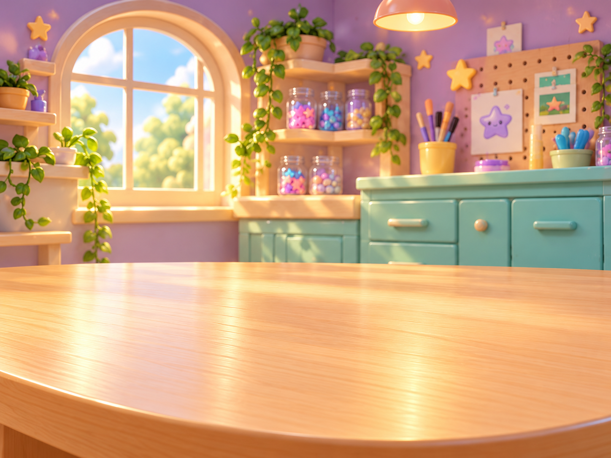
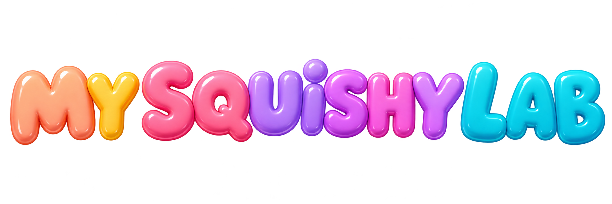
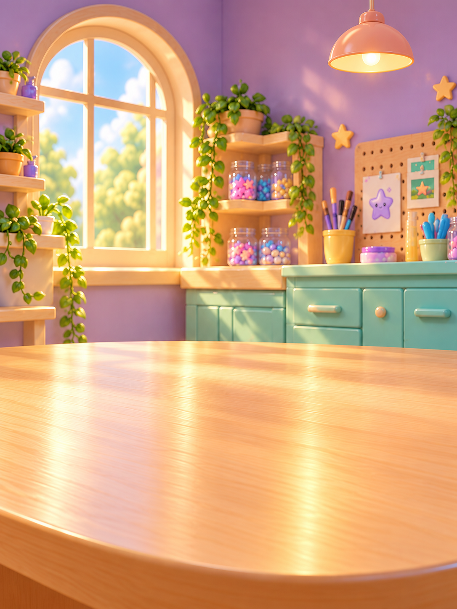
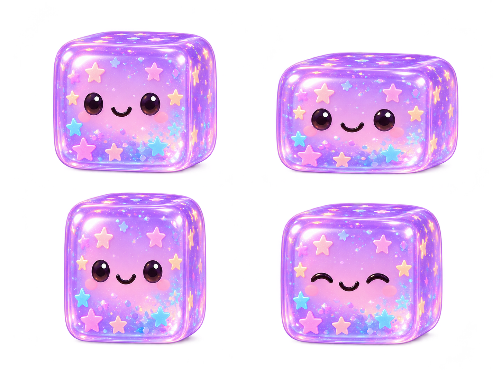
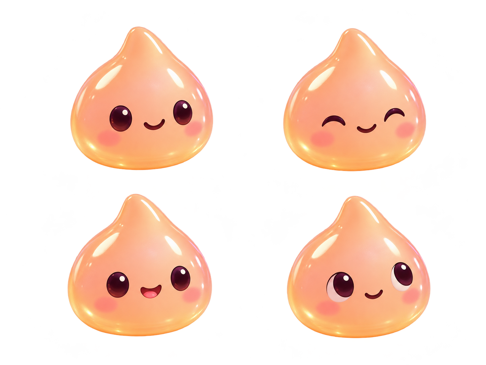
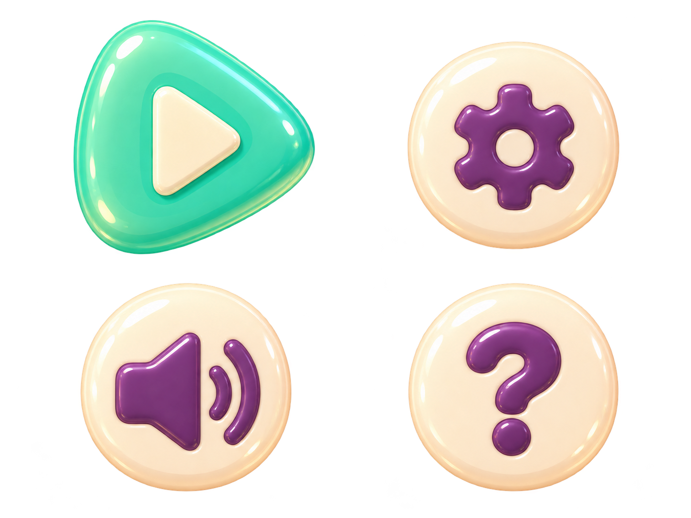

Landscape clean plate

welcome_landscape.pngTap your squishy or Pip. Choose Play to enter your workshop.


Scene 01 artwork and animation preview.
Welcome. Tap Play to enter your workshop.
Cube idle wobble and press/release response, Pip blink and delighted reaction, button feedback, responsive portrait composition and reduced-motion support. These are 2D presentation animations. Scene 02 workshop hub is connected. Physical gel deformation is not part of this 2D asset pack.
Full-resolution PNG originals and exact cell rectangles are included. Checkerboards below show transparency; they are not baked into the assets.
welcome_landscape.png
welcome_portrait.png
cube_poses_2x2.png
pip_expressions_2x2.png
welcome_controls_2x2.pngwordmark.png